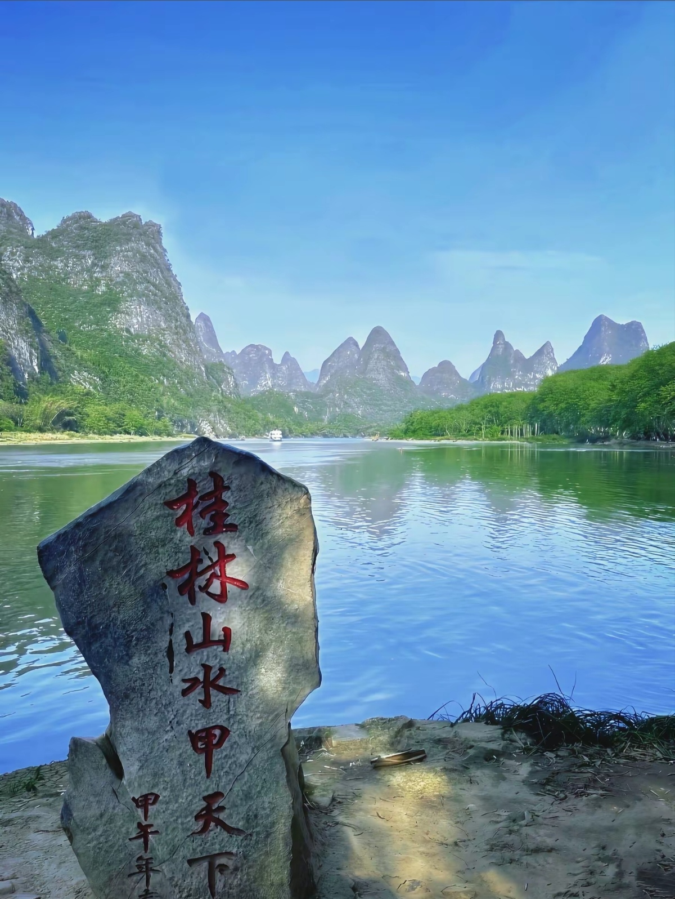
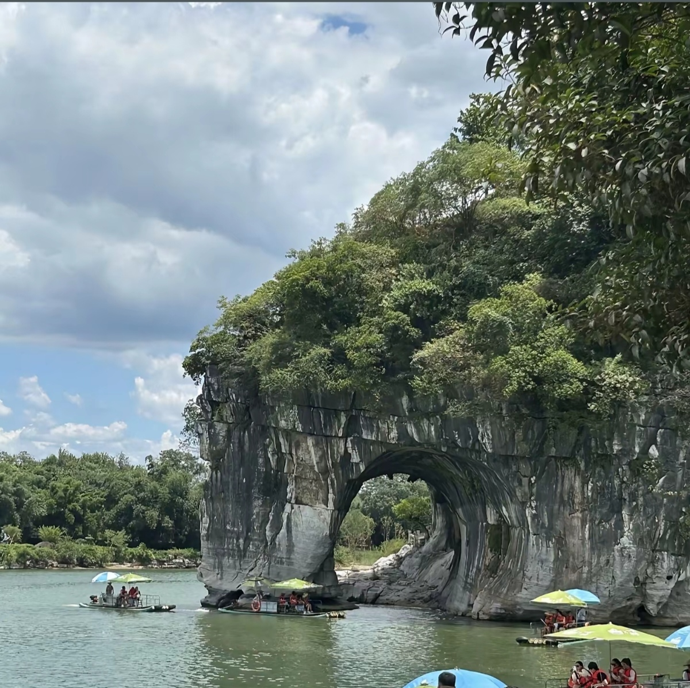
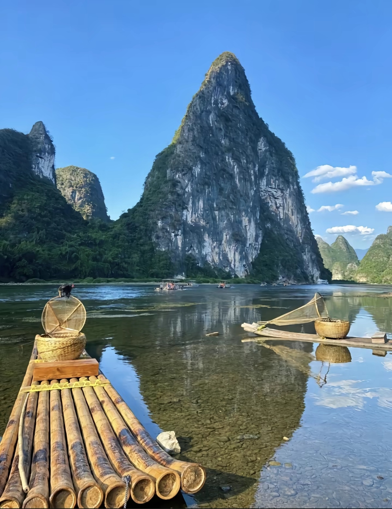
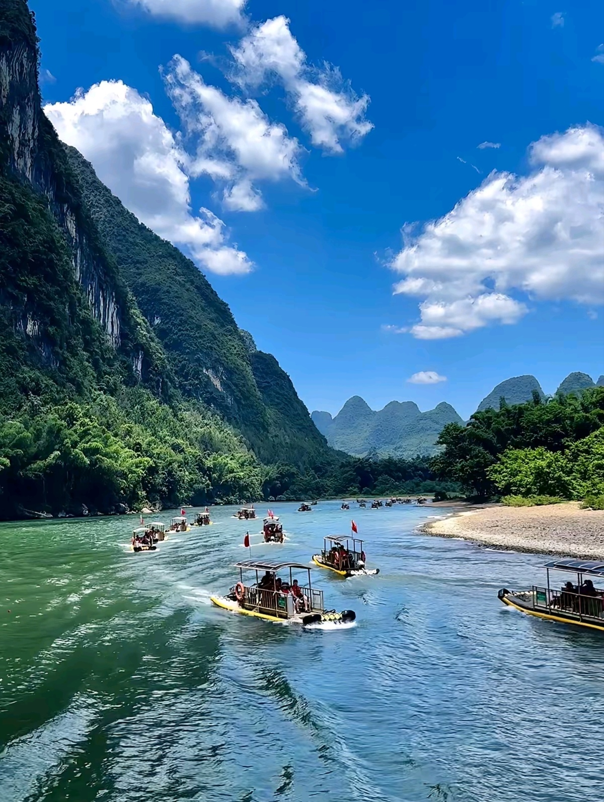
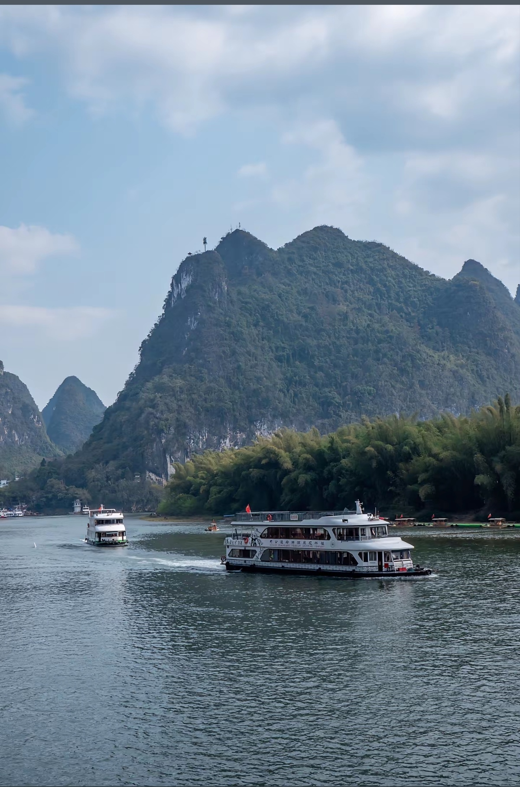
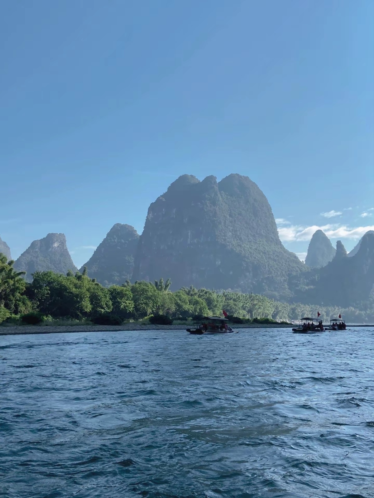

The Li River (Lijiang) cruise from Guilin to Yangshuo is one of China's most iconic travel experiences. The 83-kilometer journey winds through dramatic karst mountains, bamboo groves, water buffalo, and traditional fishing villages. The scenery looks like a traditional Chinese ink painting come to life, and has inspired artists and poets for centuries. The river is also famous for appearing on the 20 yuan banknote.






Guilin Liangjiang Airport: Direct flights from Beijing (3h), Shanghai (2.5h), Guangzhou (1.5h). Airport bus to city center: ¥20, 40 min.
From Guangzhou: 2.5-3 hours, ¥150-200. From Guiyang: 2 hours, ¥130. Guilin Railway Station is in city center.
Molongshan Wharf: Most cruises depart here. Taxi from Guilin center: ¥30-40, 20 min. Arrive 1 hour before departure.
By Bus: Yangshuo to Guilin: 1.5 hours, ¥25. Buses depart every 20 min from Yangshuo bus station.
Duration: 4-5 hours cruise + Yangshuo exploration
Route: Guilin Molongshan Wharf → Cruise downstream → Yangshuo West Street
Highlights: Nine Horse Mural Hill, Yellow Cloth Shoal (20 yuan view), Xingping Village
Cost: ¥210-380 for cruise
Location: Xingping or Yangdi section
Duration: 1-2 hours
Cost: ¥100-160 per raft (2-4 people)
Best for: Intimate experience, photography
Day 1: Guilin city (Elephant Trunk Hill, Reed Flute Cave) → Evening cruise departure
Day 2: Arrive Yangshuo → Rent bike → Explore countryside → West Street nightlife
Best Spots: Xingping Village (sunrise), Yellow Cloth Shoal (morning mist), Yangshuo countryside (golden hour)
Tips: Bring wide-angle lens, arrive early for best light
Location: West Street, Yangshuo
Specialty: Beer fish (Yangshuo's signature dish)
Hours: 11:00 AM - 10:00 PM
Location: Throughout Guilin city
Specialty: Guilin mifen (rice noodles with gravy)
Hours: 6:00 AM - 9:00 PM
Location: West Street, Yangshuo
Specialty: Mix of Chinese and Western food
Hours: 10:00 AM - 11:00 PM
Location: Onboard the cruise ship
Specialty: Included in cruise ticket
Hours: Lunch served 11:30 AM - 1:00 PM
Location: Yangshuo countryside
Features: Luxury villas, Spa, Mountain views
Distance to West Street: 5 km
Location: Along Li River, south of Yangshuo
Features: Riverside location, Peaceful, Garden
Distance to West Street: 8 km
Location: On or near West Street
Features: Central location, Nightlife, Shopping
Distance to West Street: Walking distance
Location: Guilin city center
Features: Near attractions, Good transport
Distance to Wharf: 20-30 min drive